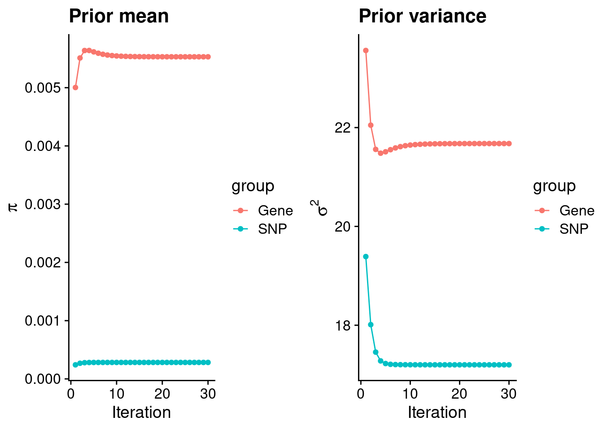
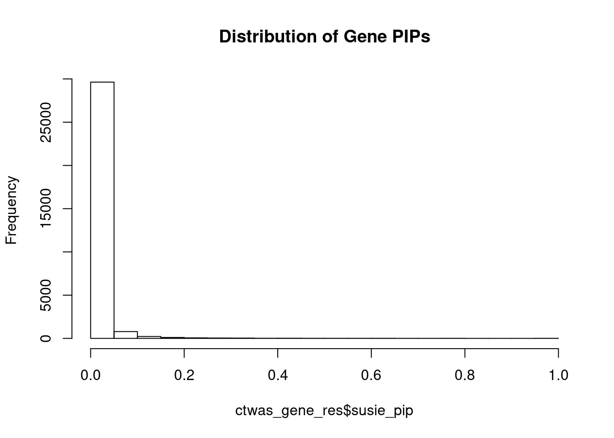
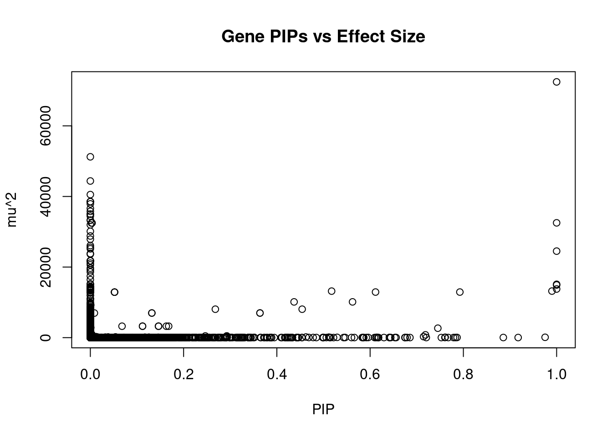
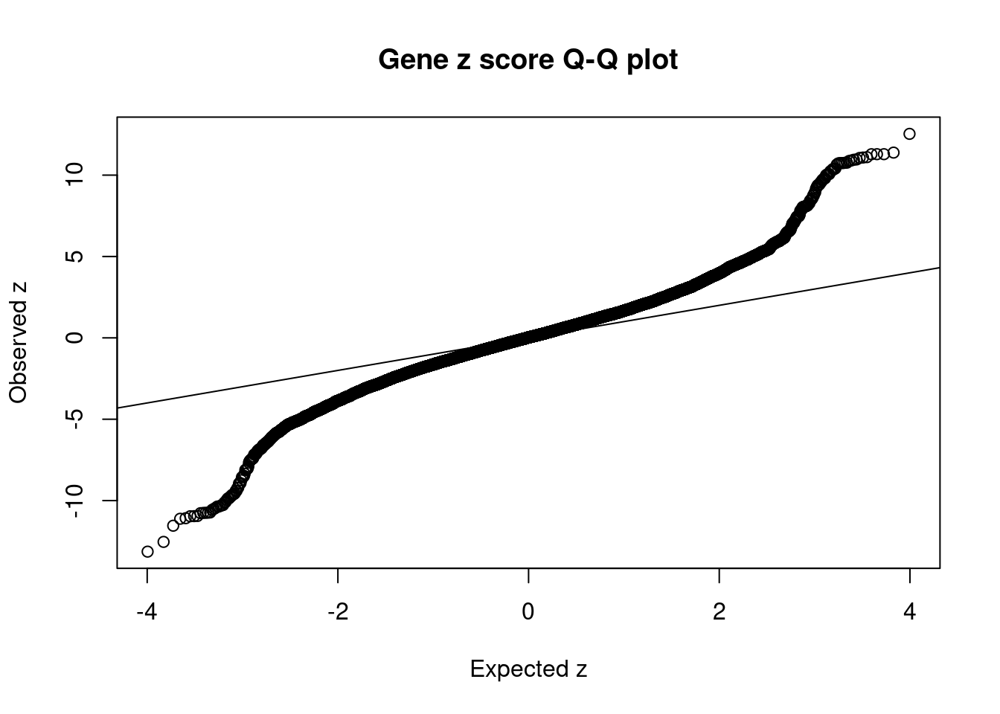
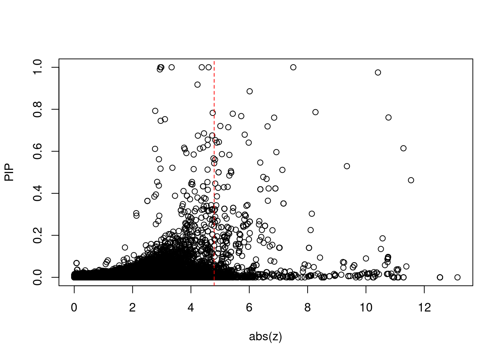
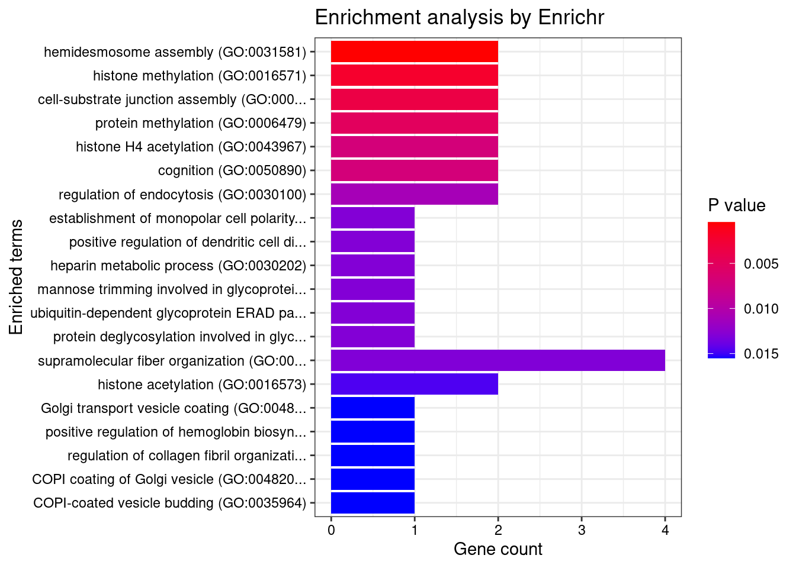
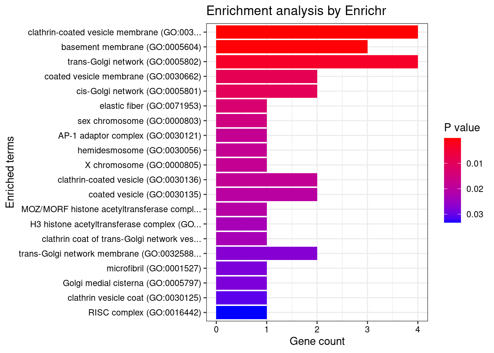
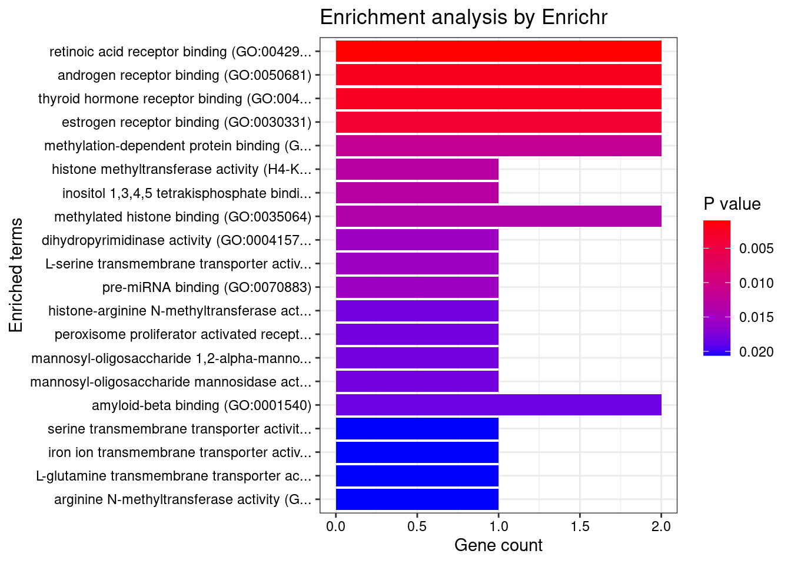
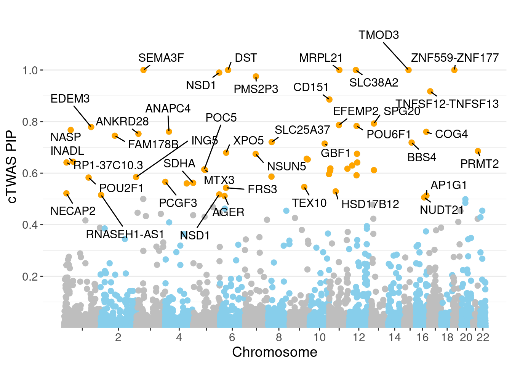
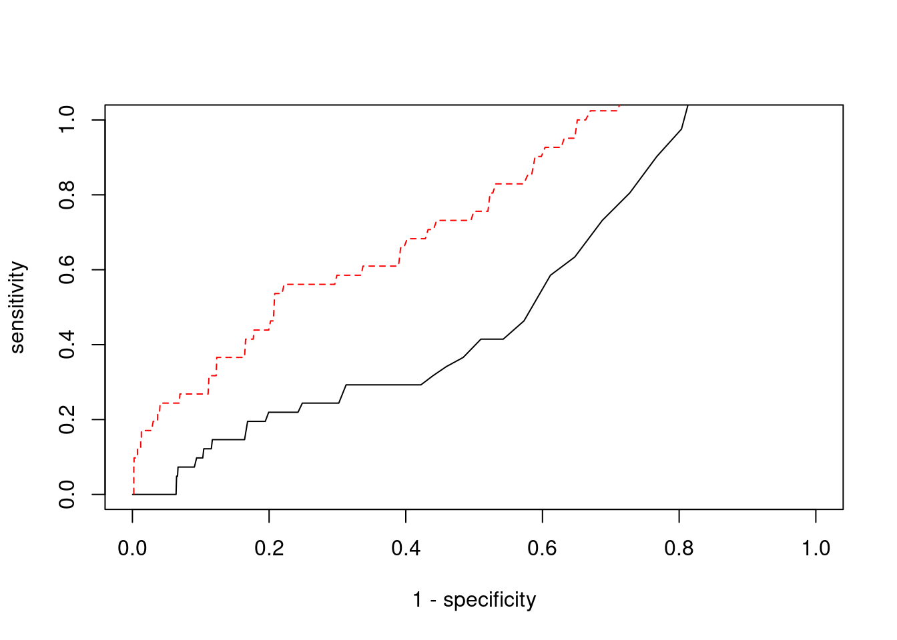

Last updated: 2022-02-22
Checks: 6 1
Knit directory: cTWAS_analysis/
This reproducible R Markdown analysis was created with workflowr (version 1.6.2). The Checks tab describes the reproducibility checks that were applied when the results were created. The Past versions tab lists the development history.
Great! Since the R Markdown file has been committed to the Git repository, you know the exact version of the code that produced these results.
Great job! The global environment was empty. Objects defined in the global environment can affect the analysis in your R Markdown file in unknown ways. For reproduciblity it’s best to always run the code in an empty environment.
The command set.seed(20211220) was run prior to running the code in the R Markdown file. Setting a seed ensures that any results that rely on randomness, e.g. subsampling or permutations, are reproducible.
Great job! Recording the operating system, R version, and package versions is critical for reproducibility.
Nice! There were no cached chunks for this analysis, so you can be confident that you successfully produced the results during this run.
Using absolute paths to the files within your workflowr project makes it difficult for you and others to run your code on a different machine. Change the absolute path(s) below to the suggested relative path(s) to make your code more reproducible.
| absolute | relative |
|---|---|
| /project2/xinhe/shengqian/cTWAS/cTWAS_analysis/data/ | data |
| /project2/xinhe/shengqian/cTWAS/cTWAS_analysis/code/ctwas_config.R | code/ctwas_config.R |
Great! You are using Git for version control. Tracking code development and connecting the code version to the results is critical for reproducibility.
The results in this page were generated with repository version 1058990. See the Past versions tab to see a history of the changes made to the R Markdown and HTML files.
Note that you need to be careful to ensure that all relevant files for the analysis have been committed to Git prior to generating the results (you can use wflow_publish or wflow_git_commit). workflowr only checks the R Markdown file, but you know if there are other scripts or data files that it depends on. Below is the status of the Git repository when the results were generated:
Ignored files:
Ignored: .ipynb_checkpoints/
Untracked files:
Untracked: Rplot.png
Untracked: analysis/.ipynb_checkpoints/
Untracked: analysis/Glucose_Adipose_Subcutaneous.Rmd
Untracked: analysis/Glucose_Adipose_Visceral_Omentum.Rmd
Untracked: analysis/Splicing_Test.Rmd
Untracked: code/.ipynb_checkpoints/
Untracked: code/AF_out/
Untracked: code/BMI_S_out/
Untracked: code/BMI_out/
Untracked: code/Glucose_out/
Untracked: code/LDL_S_out/
Untracked: code/T2D_out/
Untracked: code/ctwas_config.R
Untracked: code/mapping.R
Untracked: code/out/
Untracked: code/run_AF_analysis.sbatch
Untracked: code/run_AF_analysis.sh
Untracked: code/run_AF_ctwas_rss_LDR.R
Untracked: code/run_BMI_analysis.sbatch
Untracked: code/run_BMI_analysis.sh
Untracked: code/run_BMI_analysis_S.sbatch
Untracked: code/run_BMI_analysis_S.sh
Untracked: code/run_BMI_ctwas_rss_LDR.R
Untracked: code/run_BMI_ctwas_rss_LDR_S.R
Untracked: code/run_Glucose_analysis.sbatch
Untracked: code/run_Glucose_analysis.sh
Untracked: code/run_Glucose_ctwas_rss_LDR.R
Untracked: code/run_LDL_analysis_S.sbatch
Untracked: code/run_LDL_analysis_S.sh
Untracked: code/run_LDL_ctwas_rss_LDR_S.R
Untracked: code/run_T2D_analysis.sbatch
Untracked: code/run_T2D_analysis.sh
Untracked: code/run_T2D_ctwas_rss_LDR.R
Untracked: data/.ipynb_checkpoints/
Untracked: data/AF/
Untracked: data/BMI/
Untracked: data/BMI_S/
Untracked: data/Glucose/
Untracked: data/LDL_S/
Untracked: data/T2D/
Untracked: data/TEST/
Untracked: data/UKBB/
Untracked: data/UKBB_SNPs_Info.text
Untracked: data/gene_OMIM.txt
Untracked: data/gene_pip_0.8.txt
Untracked: data/mashr_Heart_Atrial_Appendage.db
Untracked: data/mashr_sqtl/
Untracked: data/summary_known_genes_annotations.xlsx
Untracked: data/untitled.txt
Unstaged changes:
Modified: analysis/BMI_Brain_Cortex.Rmd
Modified: analysis/LDL_Liver_S.Rmd
Modified: analysis/index.Rmd
Note that any generated files, e.g. HTML, png, CSS, etc., are not included in this status report because it is ok for generated content to have uncommitted changes.
These are the previous versions of the repository in which changes were made to the R Markdown (analysis/BMI_Brain_Cerebellar_Hemisphere_S.Rmd) and HTML (docs/BMI_Brain_Cerebellar_Hemisphere_S.html) files. If you’ve configured a remote Git repository (see ?wflow_git_remote), click on the hyperlinks in the table below to view the files as they were in that past version.
| File | Version | Author | Date | Message |
|---|---|---|---|---|
| Rmd | 1058990 | sq-96 | 2022-02-22 | update |
#number of imputed weights
nrow(qclist_all)[1] 30990#number of imputed weights by chromosome
table(qclist_all$chr)
1 2 3 4 5 6 7 8 9 10 11 12 13 14 15 16
2930 2095 1825 1113 1310 1640 1721 1105 1264 1340 1822 1551 570 1023 1037 1575
17 18 19 20 21 22
2139 377 2185 993 407 968 #number of imputed weights without missing variants
sum(qclist_all$nmiss==0)[1] 28323#proportion of imputed weights without missing variants
mean(qclist_all$nmiss==0)[1] 0.9139#add z scores to results
load(paste0(results_dir, "/", analysis_id, "_expr_z_gene.Rd"))
ctwas_gene_res$z <- z_gene[ctwas_gene_res$intron_id,]$z
z_snp <- z_snp[z_snp$id %in% ctwas_snp_res$id,]
ctwas_snp_res$z <- z_snp$z[match(ctwas_snp_res$id, z_snp$id)]
#merge gene and snp results with added information
ctwas_snp_res$genename=NA
ctwas_snp_res$gene_type=NA
ctwas_snp_res$intron_id=NA
ctwas_res <- rbind(ctwas_gene_res,
ctwas_snp_res[,colnames(ctwas_gene_res)])
#get number of eQTL for geens
num_eqtl <- c()
for (i in 1:22){
load(paste0(results_dir, "/", analysis_id, "_expr_chr", i, ".exprqc.Rd"))
num_eqtl <- c(num_eqtl, unlist(lapply(wgtlist, nrow)))
}
ctwas_gene_res$num_eqtl <- num_eqtl[ctwas_gene_res$intron_id]
#store columns to report
report_cols <- colnames(ctwas_gene_res)[!(colnames(ctwas_gene_res) %in% c("type", "region_tag1", "region_tag2", "cs_index", "gene_type", "z_flag", "id", "chrom", "pos"))]
first_cols <- c("genename", "region_tag")
report_cols <- c(first_cols, report_cols[!(report_cols %in% first_cols)])
report_cols_snps <- c("id", report_cols[-1])
report_cols_snps <- report_cols_snps[!(report_cols_snps %in% "num_eqtl")]
#get number of SNPs from s1 results; adjust for thin argument
ctwas_res_s1 <- data.table::fread(paste0(results_dir, "/", analysis_id, "_ctwas.s1.susieIrss.txt"))
n_snps <- sum(ctwas_res_s1$type=="SNP")/thin
rm(ctwas_res_s1)
#estimated group prior
estimated_group_prior <- group_prior_rec[,ncol(group_prior_rec)]
names(estimated_group_prior) <- c("gene", "snp")
estimated_group_prior["snp"] <- estimated_group_prior["snp"]*thin #adjust parameter to account for thin argument
print(estimated_group_prior) gene snp
0.0055304 0.0002828 #estimated group prior variance
estimated_group_prior_var <- group_prior_var_rec[,ncol(group_prior_var_rec)]
names(estimated_group_prior_var) <- c("gene", "snp")
print(estimated_group_prior_var) gene snp
21.68 17.20 #report sample size
print(sample_size)[1] 336107#report group size
group_size <- c(nrow(ctwas_gene_res), n_snps)
print(group_size)[1] 30990 7535010#estimated group PVE
estimated_group_pve <- estimated_group_prior_var*estimated_group_prior*group_size/sample_size #check PVE calculation
names(estimated_group_pve) <- c("gene", "snp")
print(estimated_group_pve) gene snp
0.01105 0.10902 #compare sum(PIP*mu2/sample_size) with above PVE calculation
c(sum(ctwas_gene_res$PVE),sum(ctwas_snp_res$PVE))[1] 0.7502 16.4671
genename region_tag susie_pip mu2 PVE
29806 SEMA3F 3_35 1.0000 72455.47 2.156e-01
30617 SLC38A2 12_29 1.0000 13778.71 4.100e-02
30928 ZNF559-ZNF177 19_9 1.0000 14911.89 4.437e-02
30135 DST 6_42 1.0000 15112.83 4.496e-02
30586 MRPL21 11_38 1.0000 24510.28 7.292e-02
30679 TMOD3 15_21 1.0000 32524.60 9.677e-02
30017 NSD1 5_106 0.9900 13186.57 3.884e-02
30188 PMS2P3 7_48 0.9753 97.68 2.834e-04
30762 TNFSF12-TNFSF13 17_7 0.9175 28.51 7.783e-05
30518 CD151 11_1 0.8857 35.56 9.371e-05
18878 SPG20 13_13 0.7925 12914.66 3.045e-02
16388 EFEMP2 11_36 0.7865 51.61 1.208e-04
17631 POU6F1 12_31 0.7830 30.57 7.122e-05
2226 EDEM3 1_92 0.7789 30.85 7.149e-05
1006 NASP 1_28 0.7676 29.44 6.724e-05
6904 ANAPC4 4_21 0.7611 108.50 2.457e-04
22411 COG4 16_37 0.7603 35.09 7.938e-05
5169 ANKRD28 3_11 0.7528 22.61 5.065e-05
3760 FAM178B 2_57 0.7452 2674.95 5.931e-03
12318 SLC25A37 8_24 0.7205 26.65 5.712e-05
intron_id z num_eqtl
29806 intron_3_50174350_50175096 -7.509 2
30617 intron_12_46367340_46370512 2.953 1
30928 intron_19_9364948_9371610 3.338 1
30135 intron_6_56468999_56469883 2.984 1
30586 intron_11_68898012_68900548 -4.372 1
30679 intron_15_51941598_51947292 4.606 1
30017 intron_5_177260168_177267562 2.934 1
30188 intron_7_75514779_75515718 10.412 2
30762 intron_17_7559702_7560049 -4.225 1
30518 intron_11_838367_838445 6.013 1
18878 intron_13_36312477_36313968 2.776 1
16388 intron_11_65872018_65872244 8.270 1
17631 intron_12_51206883_51217642 -4.747 1
2226 intron_1_184711877_184712433 -5.433 1
1006 intron_1_45600457_45602255 5.724 2
6904 intron_4_25407253_25409698 -10.773 2
22411 intron_16_70481144_70481359 -6.852 1
5169 intron_3_15677627_15678209 3.108 1
3760 intron_2_96902707_96921165 2.963 1
12318 intron_8_23529212_23566108 5.008 1
genename region_tag susie_pip mu2 PVE
29806 SEMA3F 3_35 1.000000 72455 0.2155726
29798 CTD-2330K9.3 3_35 0.000000 51230 0.0000000
13262 CCDC171 9_13 0.000000 44381 0.0000000
25966 MAST3 19_14 0.000000 40527 0.0000000
29804 RBM6 3_35 0.000000 38536 0.0000000
29800 RBM6 3_35 0.000000 38529 0.0000000
29801 RBM6 3_35 0.000000 38529 0.0000000
29726 NADK 1_1 0.000000 37896 0.0000000
25967 MAST3 19_14 0.000000 36621 0.0000000
13264 CCDC171 9_13 0.000000 35790 0.0000000
29727 NADK 1_1 0.000000 34985 0.0000000
29728 NADK 1_1 0.000000 34985 0.0000000
29736 CFAP74 1_1 0.000000 34426 0.0000000
30361 NT5C2 10_66 0.000000 33282 0.0000000
30358 NT5C2 10_66 0.000000 33282 0.0000000
30679 TMOD3 15_21 0.999991 32525 0.0967677
30676 TMOD3 15_21 0.003702 32490 0.0003578
30675 TMOD3 15_21 0.002310 32488 0.0002233
30677 TMOD3 15_21 0.000000 31963 0.0000000
30678 TMOD3 15_21 0.000000 30119 0.0000000
intron_id z num_eqtl
29806 intron_3_50174350_50175096 -7.509 2
29798 intron_3_49910884_49913220 -9.780 1
13262 intron_9_15888088_15920270 7.903 1
25966 intron_19_18147017_18147443 -6.726 1
29804 intron_3_50059746_50060956 12.537 1
29800 intron_3_49999513_50046716 12.539 1
29801 intron_3_49999513_50048245 -12.539 1
29726 intron_1_1753649_1754051 -5.047 1
25967 intron_19_18147044_18147443 5.863 2
13264 intron_9_15920422_15971609 -7.290 1
29727 intron_1_1753649_1754284 -4.754 1
29728 intron_1_1755476_1756258 -4.754 1
29736 intron_1_1944452_1946317 -5.444 1
30361 intron_10_103181328_103193236 5.042 1
30358 intron_10_103174982_103181185 5.037 1
30679 intron_15_51941598_51947292 4.606 1
30676 intron_15_51934354_51946990 4.604 1
30675 intron_15_51931133_51934250 4.580 1
30677 intron_15_51938260_51941501 4.653 1
30678 intron_15_51938260_51947292 -3.755 2 genename region_tag susie_pip mu2 PVE
29806 SEMA3F 3_35 1.00000 72455 0.215573
30679 TMOD3 15_21 0.99999 32525 0.096768
30586 MRPL21 11_38 1.00000 24510 0.072924
30135 DST 6_42 1.00000 15113 0.044964
30928 ZNF559-ZNF177 19_9 1.00000 14912 0.044366
30617 SLC38A2 12_29 1.00000 13779 0.040995
30017 NSD1 5_106 0.98999 13187 0.038840
18878 SPG20 13_13 0.79247 12915 0.030450
18877 SPG20 13_13 0.61162 12914 0.023501
30016 NSD1 5_106 0.51745 13176 0.020285
7641 SDHA 5_1 0.56230 10130 0.016947
7640 CCDC127 5_1 0.43693 10125 0.013162
29044 ASCC2 22_10 0.45428 8058 0.010892
7429 MFSD8 4_84 0.36378 6979 0.007554
7430 MFSD8 4_84 0.36378 6979 0.007554
29042 ASCC2 22_10 0.26808 8058 0.006427
3760 FAM178B 2_57 0.74524 2675 0.005931
7431 C4orf29 4_84 0.13189 6975 0.002737
7432 C4orf29 4_84 0.13189 6975 0.002737
18879 SPG20 13_13 0.05193 12890 0.001992
intron_id z num_eqtl
29806 intron_3_50174350_50175096 -7.509 2
30679 intron_15_51941598_51947292 4.606 1
30586 intron_11_68898012_68900548 -4.372 1
30135 intron_6_56468999_56469883 2.984 1
30928 intron_19_9364948_9371610 3.338 1
30617 intron_12_46367340_46370512 2.953 1
30017 intron_5_177260168_177267562 2.934 1
18878 intron_13_36312477_36313968 2.776 1
18877 intron_13_36304632_36312145 2.769 1
30016 intron_5_177235945_177239756 -2.957 1
7641 intron_5_228333_233477 2.903 1
7640 intron_5_216859_218093 2.900 1
29044 intron_22_29825780_29832245 2.842 1
7429 intron_4_127957592_127965072 2.508 1
7430 intron_4_127957592_127965897 2.508 1
29042 intron_22_29825257_29825622 -2.882 1
3760 intron_2_96902707_96921165 2.963 1
7431 intron_4_127984423_127989721 2.510 1
7432 intron_4_127984423_128008920 2.510 1
18879 intron_13_36335832_36346225 -2.819 1 genename region_tag susie_pip mu2 PVE
30538 BDNF-AS 11_19 0.000e+00 9588.03 0.000e+00
29800 RBM6 3_35 0.000e+00 38528.75 0.000e+00
29801 RBM6 3_35 0.000e+00 38528.75 0.000e+00
29804 RBM6 3_35 0.000e+00 38536.48 0.000e+00
9380 C6orf106 6_28 4.624e-01 176.39 2.427e-04
22074 KCTD13 16_24 5.201e-02 107.43 1.662e-05
3014 DNAJC27-AS1 2_15 4.932e-05 189.67 2.783e-08
3015 DNAJC27-AS1 2_15 4.932e-05 189.67 2.783e-08
8011 POC5 5_44 6.145e-01 94.26 1.723e-04
3013 DNAJC27-AS1 2_15 5.333e-05 185.55 2.944e-08
9385 UHRF1BP1 6_28 3.834e-02 155.93 1.779e-05
9383 UHRF1BP1 6_28 3.213e-02 155.69 1.488e-05
29795 MST1R 3_35 0.000e+00 2132.87 0.000e+00
9384 UHRF1BP1 6_28 3.775e-02 156.13 1.753e-05
29786 RNF123 3_35 0.000e+00 21766.87 0.000e+00
29787 RNF123 3_35 0.000e+00 21766.87 0.000e+00
29784 RNF123 3_35 0.000e+00 21749.39 0.000e+00
29790 RNF123 3_35 0.000e+00 21764.16 0.000e+00
29789 RNF123 3_35 0.000e+00 21764.16 0.000e+00
9381 C6orf106 6_28 3.932e-03 142.15 1.663e-06
intron_id z num_eqtl
30538 intron_11_27658462_27659171 -13.14 1
29800 intron_3_49999513_50046716 12.54 1
29801 intron_3_49999513_50048245 -12.54 1
29804 intron_3_50059746_50060956 12.54 1
9380 intron_6_34654779_34696446 -11.54 2
22074 intron_16_29925581_29925790 11.38 1
3014 intron_2_24972232_24979060 11.29 1
3015 intron_2_24972232_25001415 11.29 1
8011 intron_5_75690562_75692396 11.29 1
3013 intron_2_24972232_24972626 -11.12 2
9385 intron_6_34859571_34864002 11.10 1
9383 intron_6_34835464_34836156 -11.08 1
29795 intron_3_49887562_49889924 11.08 2
9384 intron_6_34836348_34855617 11.06 1
29786 intron_3_49712656_49713513 10.96 1
29787 intron_3_49712892_49713513 -10.96 1
29784 intron_3_49698822_49698980 -10.96 1
29790 intron_3_49714174_49715575 -10.95 1
29789 intron_3_49714174_49715492 10.95 1
9381 intron_6_34688933_34696446 10.90 1
[1] 0.02114 genename region_tag susie_pip mu2 PVE
30538 BDNF-AS 11_19 0.000e+00 9588.03 0.000e+00
29800 RBM6 3_35 0.000e+00 38528.75 0.000e+00
29801 RBM6 3_35 0.000e+00 38528.75 0.000e+00
29804 RBM6 3_35 0.000e+00 38536.48 0.000e+00
9380 C6orf106 6_28 4.624e-01 176.39 2.427e-04
22074 KCTD13 16_24 5.201e-02 107.43 1.662e-05
3014 DNAJC27-AS1 2_15 4.932e-05 189.67 2.783e-08
3015 DNAJC27-AS1 2_15 4.932e-05 189.67 2.783e-08
8011 POC5 5_44 6.145e-01 94.26 1.723e-04
3013 DNAJC27-AS1 2_15 5.333e-05 185.55 2.944e-08
9385 UHRF1BP1 6_28 3.834e-02 155.93 1.779e-05
9383 UHRF1BP1 6_28 3.213e-02 155.69 1.488e-05
29795 MST1R 3_35 0.000e+00 2132.87 0.000e+00
9384 UHRF1BP1 6_28 3.775e-02 156.13 1.753e-05
29786 RNF123 3_35 0.000e+00 21766.87 0.000e+00
29787 RNF123 3_35 0.000e+00 21766.87 0.000e+00
29784 RNF123 3_35 0.000e+00 21749.39 0.000e+00
29790 RNF123 3_35 0.000e+00 21764.16 0.000e+00
29789 RNF123 3_35 0.000e+00 21764.16 0.000e+00
9381 C6orf106 6_28 3.932e-03 142.15 1.663e-06
intron_id z num_eqtl
30538 intron_11_27658462_27659171 -13.14 1
29800 intron_3_49999513_50046716 12.54 1
29801 intron_3_49999513_50048245 -12.54 1
29804 intron_3_50059746_50060956 12.54 1
9380 intron_6_34654779_34696446 -11.54 2
22074 intron_16_29925581_29925790 11.38 1
3014 intron_2_24972232_24979060 11.29 1
3015 intron_2_24972232_25001415 11.29 1
8011 intron_5_75690562_75692396 11.29 1
3013 intron_2_24972232_24972626 -11.12 2
9385 intron_6_34859571_34864002 11.10 1
9383 intron_6_34835464_34836156 -11.08 1
29795 intron_3_49887562_49889924 11.08 2
9384 intron_6_34836348_34855617 11.06 1
29786 intron_3_49712656_49713513 10.96 1
29787 intron_3_49712892_49713513 -10.96 1
29784 intron_3_49698822_49698980 -10.96 1
29790 intron_3_49714174_49715575 -10.95 1
29789 intron_3_49714174_49715492 10.95 1
9381 intron_6_34688933_34696446 10.90 1#number of genes for gene set enrichment
length(genes)[1] 55Uploading data to Enrichr... Done.
Querying GO_Biological_Process_2021... Done.
Querying GO_Cellular_Component_2021... Done.
Querying GO_Molecular_Function_2021... Done.
Parsing results... Done.
[1] "GO_Biological_Process_2021"
[1] Term Overlap Adjusted.P.value Genes
<0 rows> (or 0-length row.names)
[1] "GO_Cellular_Component_2021"
Term Overlap Adjusted.P.value
1 clathrin-coated vesicle membrane (GO:0030665) 4/90 0.007392
2 basement membrane (GO:0005604) 3/52 0.014063
Genes
1 NECAP2;AP1G1;DENND1A;SYT9
2 EFEMP2;CD151;DST
[1] "GO_Molecular_Function_2021"
[1] Term Overlap Adjusted.P.value Genes
<0 rows> (or 0-length row.names)Warning in disease_enrichment(entities = genes, vocabulary = "HGNC", database =
"CURATED"): Removing duplicates from input list. Description FDR Ratio
88 SAUL-WILSON SYNDROME 0.0238 1/20
94 Nephropathy with Pretibial Epidermolysis Bullosa and Deafness 0.0238 1/20
111 Bardet-Biedl syndrome 4 (disorder) 0.0238 1/20
112 CONGENITAL DISORDER OF GLYCOSYLATION, TYPE IIj 0.0238 1/20
113 CARDIOMYOPATHY, DILATED, 1GG 0.0238 1/20
115 PARAGANGLIOMAS 5 0.0238 1/20
116 CUTIS LAXA, AUTOSOMAL RECESSIVE, TYPE IB 0.0238 1/20
117 NEUROPATHY, HEREDITARY SENSORY AND AUTONOMIC, TYPE VI 0.0238 1/20
120 EPIDERMOLYSIS BULLOSA SIMPLEX, AUTOSOMAL RECESSIVE 2 0.0238 1/20
124 5q35 microduplication syndrome 0.0238 1/20
BgRatio
88 1/9703
94 1/9703
111 1/9703
112 1/9703
113 1/9703
115 1/9703
116 1/9703
117 1/9703
120 1/9703
124 1/9703Loading the functional categories...
Loading the ID list...
Loading the reference list...
Performing the enrichment analysis...Warning in oraEnrichment(interestGeneList, referenceGeneList, geneSet, minNum =
minNum, : No significant gene set is identified based on FDR 0.05!NULLWarning: ggrepel: 13 unlabeled data points (too many overlaps). Consider
increasing max.overlaps
#number of genes in known annotations
print(length(known_annotations))[1] 41#number of genes in known annotations with imputed expression
print(sum(known_annotations %in% ctwas_gene_res$genename))[1] 19#significance threshold for TWAS
print(sig_thresh)[1] 4.797#number of ctwas genes
length(ctwas_genes)[1] 10#number of TWAS genes
length(twas_genes)[1] 655#show novel genes (ctwas genes with not in TWAS genes)
ctwas_gene_res[ctwas_gene_res$genename %in% novel_genes,report_cols] genename region_tag susie_pip mu2 PVE
30015 NSD1 5_106 0.000e+00 6431.23 0.000e+00
30016 NSD1 5_106 5.174e-01 13175.97 2.028e-02
30017 NSD1 5_106 9.900e-01 13186.57 3.884e-02
30018 NSD1 5_106 0.000e+00 3148.36 0.000e+00
30131 DST 6_42 4.267e-05 15082.08 1.915e-06
30132 DST 6_42 0.000e+00 4270.66 0.000e+00
30133 DST 6_42 0.000e+00 6249.56 0.000e+00
30134 DST 6_42 0.000e+00 8630.70 0.000e+00
30135 DST 6_42 1.000e+00 15112.83 4.496e-02
30136 DST 6_42 0.000e+00 468.01 0.000e+00
30137 DST 6_42 0.000e+00 161.41 0.000e+00
30585 MRPL21 11_38 0.000e+00 23808.74 0.000e+00
30586 MRPL21 11_38 1.000e+00 24510.28 7.292e-02
30617 SLC38A2 12_29 1.000e+00 13778.71 4.100e-02
30675 TMOD3 15_21 2.310e-03 32487.98 2.233e-04
30676 TMOD3 15_21 3.702e-03 32490.24 3.578e-04
30677 TMOD3 15_21 0.000e+00 31963.21 0.000e+00
30678 TMOD3 15_21 0.000e+00 30118.90 0.000e+00
30679 TMOD3 15_21 1.000e+00 32524.60 9.677e-02
30761 TNFSF12-TNFSF13 17_7 4.529e-03 6.93 9.338e-08
30762 TNFSF12-TNFSF13 17_7 9.175e-01 28.51 7.783e-05
30926 ZNF559-ZNF177 19_9 0.000e+00 14360.50 0.000e+00
30927 ZNF559-ZNF177 19_9 0.000e+00 14360.50 0.000e+00
30928 ZNF559-ZNF177 19_9 1.000e+00 14911.89 4.437e-02
30929 ZNF559-ZNF177 19_9 0.000e+00 13792.34 0.000e+00
30930 ZNF559-ZNF177 19_9 0.000e+00 14306.95 0.000e+00
intron_id z num_eqtl
30015 intron_5_177136030_177191884 -0.3137 1
30016 intron_5_177235945_177239756 -2.9570 1
30017 intron_5_177260168_177267562 2.9345 1
30018 intron_5_177273784_177280565 -2.2269 1
30131 intron_6_56463156_56463565 2.9051 1
30132 intron_6_56463764_56464685 1.5193 2
30133 intron_6_56463764_56466078 -1.8465 2
30134 intron_6_56464756_56466078 2.4674 2
30135 intron_6_56468999_56469883 2.9842 1
30136 intron_6_56598006_56598476 3.7368 1
30137 intron_6_56851604_56900421 1.5511 1
30585 intron_11_68898012_68900535 4.2403 2
30586 intron_11_68898012_68900548 -4.3717 1
30617 intron_12_46367340_46370512 2.9534 1
30675 intron_15_51931133_51934250 4.5797 1
30676 intron_15_51934354_51946990 4.6040 1
30677 intron_15_51938260_51941501 4.6530 1
30678 intron_15_51938260_51947292 -3.7554 2
30679 intron_15_51941598_51947292 4.6062 1
30761 intron_17_7559297_7559846 1.6079 2
30762 intron_17_7559702_7560049 -4.2247 1
30926 intron_19_9352004_9364862 3.5900 1
30927 intron_19_9355721_9357828 -3.5900 1
30928 intron_19_9364948_9371610 3.3380 1
30929 intron_19_9364948_9376316 -2.8723 2
30930 intron_19_9371752_9376316 3.4833 1#sensitivity / recall
print(sensitivity) ctwas TWAS
0.0000 0.2439 #specificity
print(specificity) ctwas TWAS
0.9987 0.9519 #precision / PPV
print(precision) ctwas TWAS
0.00000 0.01527 
sessionInfo()R version 3.6.1 (2019-07-05)
Platform: x86_64-pc-linux-gnu (64-bit)
Running under: Scientific Linux 7.4 (Nitrogen)
Matrix products: default
BLAS/LAPACK: /software/openblas-0.2.19-el7-x86_64/lib/libopenblas_haswellp-r0.2.19.so
locale:
[1] LC_CTYPE=en_US.UTF-8 LC_NUMERIC=C
[3] LC_TIME=en_US.UTF-8 LC_COLLATE=en_US.UTF-8
[5] LC_MONETARY=en_US.UTF-8 LC_MESSAGES=en_US.UTF-8
[7] LC_PAPER=en_US.UTF-8 LC_NAME=C
[9] LC_ADDRESS=C LC_TELEPHONE=C
[11] LC_MEASUREMENT=en_US.UTF-8 LC_IDENTIFICATION=C
attached base packages:
[1] stats4 parallel stats graphics grDevices utils datasets
[8] methods base
other attached packages:
[1] readxl_1.3.1 forcats_0.5.1
[3] stringr_1.4.0 dplyr_1.0.7
[5] purrr_0.3.4 readr_2.1.1
[7] tidyr_1.1.4 tidyverse_1.3.1
[9] tibble_3.1.6 WebGestaltR_0.4.4
[11] disgenet2r_0.99.2 enrichR_3.0
[13] cowplot_1.0.0 ggplot2_3.3.5
[15] EnsDb.Hsapiens.v79_2.99.0 ensembldb_2.8.0
[17] AnnotationFilter_1.8.0 GenomicFeatures_1.36.3
[19] AnnotationDbi_1.46.0 Biobase_2.44.0
[21] GenomicRanges_1.36.1 GenomeInfoDb_1.20.0
[23] IRanges_2.18.1 S4Vectors_0.22.1
[25] BiocGenerics_0.30.0 workflowr_1.6.2
loaded via a namespace (and not attached):
[1] ggbeeswarm_0.6.0 colorspace_2.0-2
[3] rjson_0.2.20 ellipsis_0.3.2
[5] rprojroot_2.0.2 XVector_0.24.0
[7] fs_1.5.2 rstudioapi_0.13
[9] farver_2.1.0 ggrepel_0.9.1
[11] bit64_4.0.5 lubridate_1.8.0
[13] fansi_0.5.0 xml2_1.3.3
[15] codetools_0.2-16 doParallel_1.0.16
[17] cachem_1.0.6 knitr_1.36
[19] jsonlite_1.7.2 apcluster_1.4.8
[21] Cairo_1.5-12.2 Rsamtools_2.0.0
[23] broom_0.7.10 dbplyr_2.1.1
[25] compiler_3.6.1 httr_1.4.2
[27] backports_1.4.1 assertthat_0.2.1
[29] Matrix_1.2-18 fastmap_1.1.0
[31] lazyeval_0.2.2 cli_3.1.0
[33] later_0.8.0 htmltools_0.5.2
[35] prettyunits_1.1.1 tools_3.6.1
[37] igraph_1.2.10 gtable_0.3.0
[39] glue_1.5.1 GenomeInfoDbData_1.2.1
[41] reshape2_1.4.4 doRNG_1.8.2
[43] Rcpp_1.0.7 cellranger_1.1.0
[45] jquerylib_0.1.4 vctrs_0.3.8
[47] Biostrings_2.52.0 svglite_1.2.2
[49] rtracklayer_1.44.4 iterators_1.0.13
[51] xfun_0.29 rvest_1.0.2
[53] lifecycle_1.0.1 rngtools_1.5.2
[55] XML_3.99-0.3 zlibbioc_1.30.0
[57] scales_1.1.1 vroom_1.5.7
[59] hms_1.1.1 promises_1.0.1
[61] ProtGenerics_1.16.0 SummarizedExperiment_1.14.1
[63] yaml_2.2.1 curl_4.3.2
[65] memoise_2.0.1 ggrastr_1.0.1
[67] gdtools_0.1.9 biomaRt_2.40.1
[69] stringi_1.7.6 RSQLite_2.2.8
[71] highr_0.9 foreach_1.5.1
[73] BiocParallel_1.18.0 rlang_0.4.12
[75] pkgconfig_2.0.3 matrixStats_0.57.0
[77] bitops_1.0-7 evaluate_0.14
[79] lattice_0.20-38 GenomicAlignments_1.20.1
[81] labeling_0.4.2 bit_4.0.4
[83] tidyselect_1.1.1 plyr_1.8.6
[85] magrittr_2.0.1 R6_2.5.1
[87] generics_0.1.1 DelayedArray_0.10.0
[89] DBI_1.1.1 haven_2.4.3
[91] pillar_1.6.4 whisker_0.3-2
[93] withr_2.4.3 RCurl_1.98-1.5
[95] modelr_0.1.8 crayon_1.4.2
[97] utf8_1.2.2 tzdb_0.2.0
[99] rmarkdown_2.11 progress_1.2.2
[101] grid_3.6.1 data.table_1.14.2
[103] blob_1.2.2 git2r_0.26.1
[105] reprex_2.0.1 digest_0.6.29
[107] httpuv_1.5.1 munsell_0.5.0
[109] beeswarm_0.2.3 vipor_0.4.5